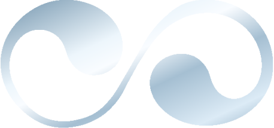

EXHIBITION FLOW
A—G전시 관람 순서이동 동선



YEAR:ON(이어온)은 김홍도의 풍속화부터 오늘날의 K-CULTURE까지,
시대를 넘어 이어지는 우리성(WE-NESS)을 조명하는 인터랙티브 프로젝트입니다.
함께 춤추고, 응원하며 일상을 나누는 문화는 시대마다 다른 모습으로 이어져 왔습니다.
YEAR:ON은 과거와 현재의 기록을 연결하며 그 안에 담긴 관계와 함께함의 의미를 살펴봅니다.
풍속화 속 함께하는 장면을 직접 경험하고, 시대별 매체를 따라 한국 문화 속 우리성을 만나보세요.
HOW TO EXPERIENCE ↓